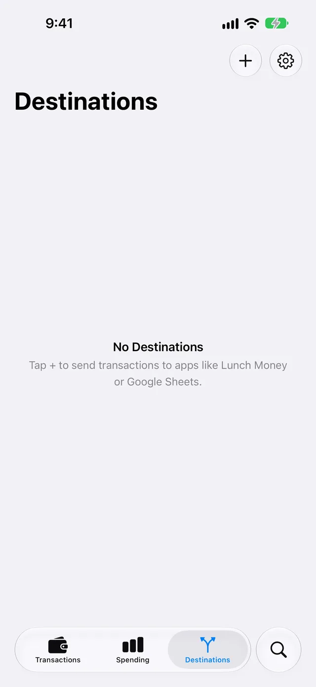
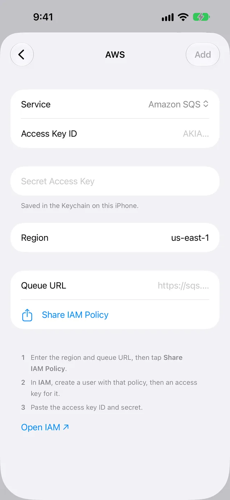
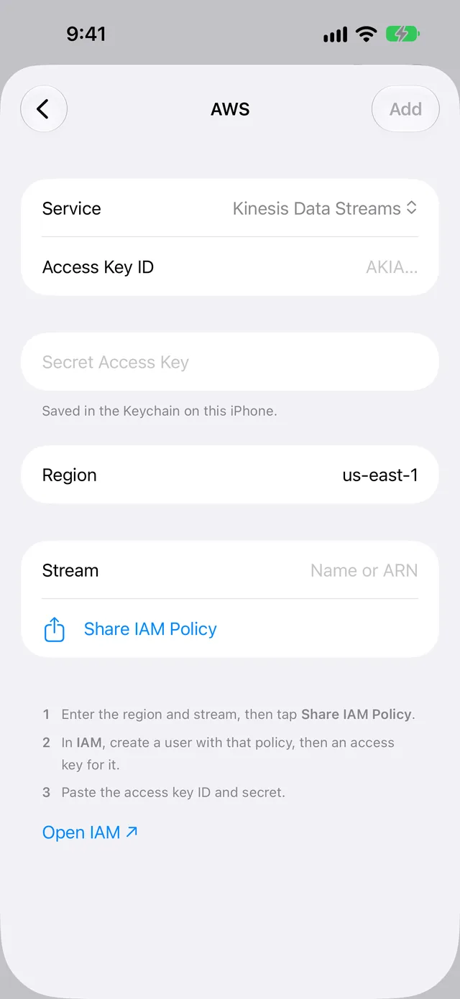
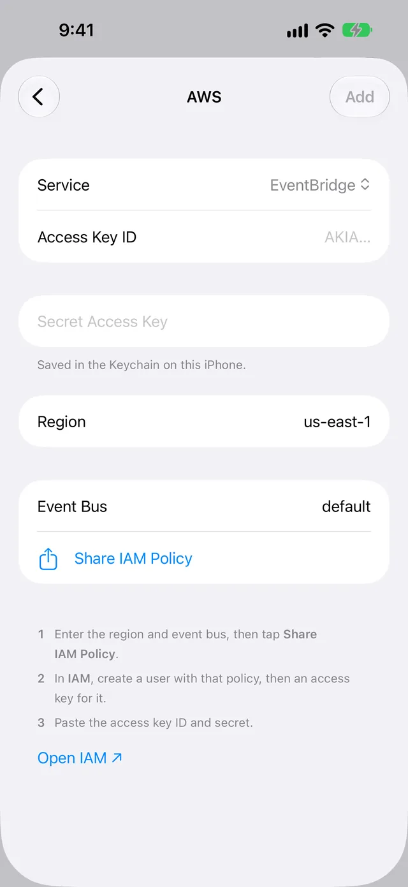

Send Apple Card transactions to AWS
WalletFeed sends your Apple Card, Apple Cash and Savings transactions from your iPhone to Amazon S3, Amazon SQS, Kinesis Data Streams, DynamoDB or EventBridge in your AWS account. You make a user in AWS with a policy from WalletFeed, then you paste an access key for that user into WalletFeed.
Before you start
You must have:
- An iPhone with iOS 26 or a newer version
- WalletFeed, with access to your Wallet accounts
- WalletFeed Pro, a subscription with a 1-week free trial, or a one-time Lifetime purchase
- An AWS account that lets you make users and access keys in AWS Identity and Access Management (IAM)
- A web browser, on a computer or on your iPhone.
WalletFeed is available only in the US.
WalletFeed can use only the commercial AWS Regions. It cannot use the AWS GovCloud (US) Regions or the China Regions.
Your key stays on your iPhone
- WalletFeed keeps the access key in the Keychain on your iPhone. iOS encrypts the Keychain.
- The access key does not go to iCloud Keychain or to your other devices.
- WalletFeed has no account and no servers. No person at WalletFeed can see or get the access key.
- Your iPhone sends the access key only to AWS, in each request to AWS.
- When you delete the destination, WalletFeed deletes the access key from your iPhone. You can also delete the access key in AWS.
Step 1: Make the AWS resource
WalletFeed sends your transactions to a bucket, a queue, a stream, a table or an event bus in your AWS account. Each of these is a resource in AWS.
Do the steps for the service that you will use. If you have the resource, go to Step 2.
Amazon S3: make a bucket
- On your computer, open the Amazon S3 console.
- In the navigation bar, select the AWS Region for the bucket.
- Click General purpose buckets.
- Click Create bucket.
- In Bucket name, type a name for the bucket.
- Do not change the other values on the page. As a result, all four controls in Block Public Access settings for this bucket stay on.
- Click Create bucket.
- Record the bucket name and the code of the region, for example
us-east-1.
For more information, refer to Creating a general purpose bucket in the AWS documentation.
Amazon SQS: make a queue
- On your computer, open the Amazon SQS console.
- In the navigation bar, select the AWS Region for the queue.
- Click Create queue.
- For Type, keep Standard.
- In Name, type a name for the queue.
- Click Create queue. The Details page of the queue opens.
- Copy the URL of the queue, for example
https://sqs.us-east-2.amazonaws.com/123456789012/MyQueue. - Send the URL to your iPhone, for example with AirDrop.
You can also use a FIFO (first-in-first-out) queue. If the name of the queue has .fifo at the end, WalletFeed uses it as a FIFO queue.
For more information, refer to Creating an Amazon SQS standard queue and sending a message.
Kinesis Data Streams: make a stream
- On your computer, open the Kinesis console.
- In the navigation bar, select the AWS Region for the stream.
- Click Create data stream.
- Type a name for the stream.
- Keep the On-demand capacity mode, or select Provisioned.
- If you selected Provisioned, type the number of shards.
- Click Create Kinesis stream.
- Wait until the Status of the stream changes to Active.
- Record the stream name and the code of the region.
For more information, refer to Create a stream using the AWS Management Console.
DynamoDB: make a table
WalletFeed can write only to a table with the partition key id of the type String, and with no sort key.
- On your computer, open the DynamoDB console.
- In the navigation bar, select the AWS Region for the table.
- Click Tables.
- Click Create table.
- In Table name, type a name for the table.
- In Partition key, type
id. - Make sure that the type of the partition key is String.
- Do not type a value in Sort key.
- For Table settings, keep Default settings.
- Click Create table.
- Record the table name and the code of the region.
For more information, refer to Create a table in DynamoDB.
EventBridge: make a rule on the event bus
WalletFeed sends events to the default event bus, or to a different event bus that you type in WalletFeed. A rule selects events with an event pattern. EventBridge sends an event to a target only when a rule on the event bus selects the event. Thus, you must make a rule that selects all the events from WalletFeed.
-
Make the resource that will receive the events, for example a queue (refer to Amazon SQS: make a queue).
-
On your computer, open the EventBridge console.
-
In the navigation bar, select the AWS Region for the rule.
-
Click Rules.
-
Click Create rule.
-
Click Advanced Builder.
-
In Name, type a name for the rule.
-
For Event bus, select AWS default event bus (the
defaultevent bus), or the event bus that you will type in WalletFeed. -
For Rule type, select Rule with an event pattern.
-
Click Next.
-
For Event source, select AWS events or EventBridge partner events.
-
In the Creation method section, for Method, select Custom pattern (JSON editor).
-
Copy this pattern:
{"source": ["app.walletfeed"]} -
Paste the pattern in Event pattern.
-
Click Next.
-
For Target type, select AWS service.
-
For Select a target, select the service that receives the events, for example Amazon SQS.
-
Select the resource of that service, for example your queue.
-
Click Next.
-
Click Next again.
-
Click Create rule.
-
Record the code of the region.
For more information, refer to Creating rules using the Advanced Builder.
Step 2: Open the AWS screen in WalletFeed
-
On your iPhone, open WalletFeed.
-
Tap Destinations.
-
Tap + at the top of the screen.

-
Scroll to the Developers section at the end of the list.
-
Tap AWS (the row that shows S3, SQS, Kinesis, DynamoDB, EventBridge).
-
If WalletFeed shows the WalletFeed Pro screen, get WalletFeed Pro on that screen. Then the AWS screen opens.
-
Tap Service.
-
Tap the service that you used in Step 1, for example Amazon S3.
-
If your resource is not in
us-east-1, replaceus-east-1in Region with the code of its region. -
If you selected Amazon S3, type the bucket name in Bucket.

-
If you selected Amazon S3, do not type a value in Endpoint.
-
If you selected Amazon SQS, paste the queue URL in Queue URL. WalletFeed uses the region in the queue URL.

-
If you selected Kinesis Data Streams, type the stream name or the Amazon Resource Name (ARN) in Stream.

-
If you selected DynamoDB, type the table name or ARN in Table.
-
If you selected EventBridge, keep
defaultin Event Bus, or type the name or ARN of your event bus.
For Amazon S3, you can also change Prefix and Format. The format is CSV or JSON Lines. The prefix is the folder in the bucket. Its value is walletfeed/ until you change it. The policy in Step 3 contains the prefix. Thus, you must set the prefix before you get the policy.
Step 3: Make an IAM user with the policy
WalletFeed makes an IAM policy for the resource on the AWS screen. The policy lets the access key do only these actions on that resource:
| Service | Actions in the policy |
|---|---|
| Amazon S3 | s3:PutObject and s3:DeleteObject on the prefix in the bucket. WalletFeed deletes only its test file. |
| Amazon SQS | sqs:SendMessage on the queue |
| Kinesis Data Streams | kinesis:PutRecords on the stream |
| DynamoDB | dynamodb:BatchWriteItem and dynamodb:DescribeTable on the table |
| EventBridge | events:PutEvents on the event bus |
- In WalletFeed, tap Share IAM Policy. iOS shows a menu to send or copy the policy.
- If you use IAM on your computer, send the policy to your computer, for example with AirDrop.
- If you use IAM on your iPhone, tap Copy in the menu.
- Open the IAM console (on your iPhone, you can also tap Open IAM on the AWS screen in WalletFeed).
- Click Users.
- Click Create user.
- In User name, type a name for the user, for example
walletfeed. - Click Next.
- On the Set Permissions page, click Next (you add the policy after you make the user).
- Click Create user.
- Click View user.
- Click the Permissions tab.
- Click Add permissions.
- Click Create inline policy.
- In the Policy editor, select JSON.
- Delete all the JSON in the editor.
- If you sent the policy to your computer, copy the policy on your computer.
- Paste the policy from WalletFeed in the editor.
- Click Next.
- In Policy Name, type a name for the policy, for example
walletfeed. - Click Create policy.
For more information, refer to Create an IAM user for workloads that can't use IAM roles.
Step 4: Make an access key
- On the page of the user, click the Security credentials tab.
- In the Access keys section, click Create access key.
- On the Access key best practices & alternatives page, select Other.
- Click Next.
- Type a description for the key, for example
WalletFeed on iPhone, or keep the field empty. - Click Create access key.
- Click Show. AWS shows the secret access key.
- If you use IAM on your computer, send the access key ID and the secret access key to your iPhone.
- Keep this page open until WalletFeed has the two values.
For more information, refer to How an IAM administrator can manage IAM user access keys.
Step 5: Paste the key and start to send
-
On your iPhone, open WalletFeed again.
-
If the AWS screen is not open, do Step 2 again.
-
Copy the access key ID.
-
In WalletFeed, paste the access key ID in Access Key ID. The first letters of the ID in the field are
AKIA. -
Copy the secret access key.
-
In WalletFeed, paste the secret access key in Secret Access Key.
-
Tap Add. WalletFeed uses the key to do a test of the resource.
-
If WalletFeed shows an error message below Share IAM Policy, refer to If there is a problem.
-
Read the message, for example Send Transactions to Amazon S3?
The message tells you the data that the service will receive, the accounts and the start date.
-
Tap Send. WalletFeed adds the destination and starts to send your transactions.
The test after you tap Add is different for each service:
- For Amazon S3, WalletFeed writes a test file in the prefix, for example
walletfeed/walletfeed-test.csv. Then it deletes the file. - For Amazon SQS, Kinesis Data Streams and EventBridge, WalletFeed sends one test event with the description
WalletFeed test transaction. - For DynamoDB, WalletFeed reads the keys of the table. It does not write an item.
If you tap Cancel in the message, WalletFeed does not add the destination. The AWS screen stays open.
The name of the new destination contains the name of the service and the name of the resource, for example Amazon S3 · my-bucket.
Data that AWS receives
| Service | Data |
|---|---|
| Amazon S3 | One file for each month, for example walletfeed/transactions/2026-10.csv, or .jsonl for JSON Lines. |
| Amazon SQS | One message for each change. The body of the message is the event. |
| Kinesis Data Streams | One record for each change. The data is the event, and the partition key is the id of the transaction. |
| DynamoDB | One item for each transaction, with the partition key id. A change replaces the item. |
| EventBridge | One event for each change, from the source app.walletfeed. The detail field is the WalletFeed event. |
In an EventBridge event, detail-type is Transaction Created, Transaction Updated or Transaction Deleted.
Each event is a JSON object with these fields:
| Field | Value |
|---|---|
event |
created the first time, then updated after each change. deleted if a transaction becomes declined or expired, or Wallet removes it. |
id |
The WalletFeed ID of the transaction. |
date |
The day of the transaction, in the time zone of your iPhone. |
merchant |
The merchant name, or the description if Wallet has no merchant name. |
amount |
The value of the transaction. For purchases and fees, the value is less than zero. For payments and refunds, it is more than zero. |
currency |
The currency code, for example USD. |
category |
The WalletFeed category, for example Groceries or Dining. |
status |
The status in Wallet, for example pending, authorized or booked. |
pending |
true when the status is pending or authorized, and false at other times. |
account |
The account name, for example Apple Card. |
description |
The description of the transaction in Wallet. |
type |
The transaction type in Wallet, for example pointOfSale or refund. |
mcc |
The merchant category code. |
foreignAmount |
For a purchase in a different currency, the value in that currency. It has the same sign (plus or minus) as amount. |
foreignCurrency |
The code of that different currency. |
If Wallet does not give a value, the value is null, for example foreignAmount for a purchase in dollars. A deleted event has only event and id.
WalletFeed sends the test event on one line. The date is the day of the test. For Amazon SQS, Kinesis Data Streams and EventBridge, the test event has these values:
{
"account": "Sample Card",
"amount": -4.2,
"category": "Shopping",
"currency": "USD",
"date": "2026-10-30",
"description": "WalletFeed test transaction",
"event": "created",
"foreignAmount": null,
"foreignCurrency": null,
"id": "00000000-0000-0000-0000-000000000000",
"mcc": 5734,
"merchant": "WalletFeed",
"pending": true,
"status": "pending",
"type": "purchase"
}
In DynamoDB, each field is an attribute of the item. Strings are type S, numbers are type N, and true or false is type BOOL. WalletFeed does not write the fields that have no value.
In Amazon S3, a JSON Lines file has one line for each transaction. Each line is an object with the same fields, but with no event.
In Amazon S3, a CSV file has 16 columns. The first columns are Date, Posted Date, Merchant, Description, Original Description, Amount, Currency and Direction. The last columns are Status, Type, Category, MCC, Account, Foreign Amount, Foreign Currency and WalletFeed ID.
New and changed transactions
While WalletFeed is open, AWS receives changes in seconds. When WalletFeed is not open, iOS starts WalletFeed approximately 1 hour or less after a change in Wallet. If Background Sync is on in Settings › Sync, WalletFeed then sends the change. Background Sync is on until you set it to off.
When the status of a pending transaction changes to booked, WalletFeed sends the same transaction again. If a transaction becomes declined or expired, or if Wallet removes it, WalletFeed sends a deleted event. A refund is a different transaction, and its amount is more than zero.
In Amazon S3, when a month has a change, WalletFeed replaces the file of that month with a new file. The new file does not contain the deleted transactions. In DynamoDB, a change replaces the item, and a deleted event deletes the item. Thus, Amazon S3 and DynamoDB keep one copy of each transaction.
Amazon SQS, Kinesis Data Streams and EventBridge can receive the same event more than one time. You can use id to find the transaction in your data. If the event and status did not change, you can ignore the event. If WalletFeed sends a transaction to a FIFO queue again with no changes in 5 minutes or less, the queue ignores it.
If AWS does not accept some records, WalletFeed sends them again after 1 second. If AWS does not accept them again, the destination shows "AWS rejected" and the number of records. WalletFeed tries to send the records again when it sends more changes.
Send previous transactions
A new destination also receives previous transactions from the start date in Settings › Sync › Initial History. Initial History is All until you change it.
To send transactions from a different period, use Send History:
- In WalletFeed, tap Destinations.
- Tap the AWS destination (the first part of its name is the name of the service, for example Amazon S3 ·).
- Tap Send History.
- Tap 30 Days, 90 Days, 1 Year or All.
Amazon SQS, Kinesis Data Streams and EventBridge receive each transaction again, as a created event. Amazon S3 and DynamoDB keep one copy of each transaction.
To stop Send History, tap Send History › Stop Sending.
Change or remove the destination
-
In WalletFeed, tap Destinations.
-
Tap the AWS destination.

The screen of an AWS destination has the same controls, but it has no Replace Token. It shows the resource, for example Bucket or Queue. Below the resource, it shows Region, Share IAM Policy and Replace Key.
To send only some transactions:
- Set Filter to on.
- Select the transactions with Accounts, Categories, Minimum and the other controls.
For more information, refer to Choose what to send.
To stop the destination but keep it, set Enabled to off.
To use a different access key:
- Tap Replace Key.
- Paste the access key ID in Access Key ID.
- Paste the secret access key in Secret Access Key.
- Tap Replace.
When you tap Replace, WalletFeed does the same test that it does after you tap Add. WalletFeed keeps the new key only if the test is satisfactory. For Amazon SQS, Kinesis Data Streams and EventBridge, WalletFeed sends one test event.
You cannot change the region or the resource of a destination. You can have more than one AWS destination, for example a bucket and a queue.
To use a different resource:
- Do Step 1 thru Step 5 again for the new resource.
- Delete the destination that you do not use.
To remove the destination:
- Tap Delete.
- Tap Delete again.
WalletFeed tells you "Transactions already sent stay at the destination." The data stays in your AWS account until you delete it in AWS.
If no destination uses the access key, delete the key in IAM:
- In the IAM console, click Users.
- Click the name of the user.
- Click the Security credentials tab.
- In the Access keys section, click Actions for the key.
- Click Deactivate.
- In the dialog, click Deactivate again.
- Click Actions for the key.
- Click Delete.
- In the dialog, type the access key ID.
- Click Delete.
If there is a problem
If you cannot tap Add
WalletFeed lets you tap Add only when all the necessary fields have a value. Region must contain only letters, numbers and hyphens.
- Make sure that Access Key ID and Secret Access Key are not empty.
- Make sure that Region has a code, for example
us-east-1, and not a name, for example US East. - For Amazon S3, make sure that Bucket is not empty.
- If Endpoint has a value, make sure that its first part is not
http://. WalletFeed accepts only HTTPS. - For Amazon SQS, paste all of the queue URL again. The first part of the URL is
https://sqs.. - For Kinesis Data Streams or DynamoDB, make sure that Stream or Table is not empty.
If WalletFeed shows "Key rejected"
AWS did not accept the key, or the IAM policy of the user does not let the key do the action. WalletFeed shows the HTTP code, for example "Key rejected (HTTP 403). Check the key and its IAM policy."
- Copy the access key ID.
- In WalletFeed, paste the access key ID in Access Key ID.
- Copy the secret access key.
- In WalletFeed, paste the secret access key in Secret Access Key.
- In the IAM console, open the user.
- On the Permissions tab, make sure that the user has the policy from Share IAM Policy.
- If you changed the resource or the region after you got the policy, tap Share IAM Policy again.
- If you got a new policy, replace the policy of the user with the new policy.
- In WalletFeed, tap Add.
If WalletFeed shows "Wrong region for this bucket."
The bucket is not in the region that Region shows.
- In the Amazon S3 console, find the region of the bucket.
- In WalletFeed, type the code of that region in Region.
- Tap Add.
If WalletFeed shows "Not found. Check the name and the region."
AWS did not find a bucket with the name in Bucket.
- In WalletFeed, make sure that the name in Bucket is the same as the bucket name in AWS.
- Make sure that Region has the code of the region of the bucket.
- Tap Add.
If WalletFeed shows a message about the partition key
If the DynamoDB table has a different partition key or a sort key, WalletFeed shows "The table's partition key must be a string named id."
- Make a new DynamoDB table with the partition key
idof the type String, and no sort key. - In WalletFeed, type the name of the new table in Table.
- Tap Share IAM Policy.
- Replace the policy of the user with the new policy.
- Tap Add.
If WalletFeed shows "Couldn't connect" with HTTP 400
WalletFeed shows "Couldn't connect: The server returned an error (HTTP 400)." AWS did not accept the data from WalletFeed. For example, the name of the queue, the stream, the table or the event bus is incorrect. The resource can also be in a different region.
- In the AWS console, find the resource and its region.
- In WalletFeed, type the name of the resource again, or paste the queue URL again.
- In Region, type the code of the region of the resource.
- Tap Add.
If the destination shows "Authentication failed"
AWS did not accept the key the last time that WalletFeed sent changes. For example, a person deactivated or deleted the key, or removed the policy from the user.
-
In WalletFeed, tap Destinations.

-
Tap the AWS destination.

-
If the user has no policy from WalletFeed, add the policy to the user (refer to Step 3).
-
If the user has no active access key, make a new access key (refer to Step 4).
-
Tap Replace Key.
-
Paste the access key ID in Access Key ID.
-
Paste the secret access key in Secret Access Key.
-
Tap Replace.
If the destination shows "AWS rejected" or "AWS throttled"
AWS did not accept some records, and it did not accept them again after 1 second. "AWS throttled" tells you that the resource received data too frequently. WalletFeed tries to send the records again when it sends more changes.
- In WalletFeed, open the AWS destination.
- Tap Send Test.
- If Send Test shows HTTP 403, do the steps in If the destination shows "Authentication failed".
- If the destination shows the error message again after WalletFeed sends more changes, examine the resource in the AWS console.
If the EventBridge target receives no events
EventBridge sends an event to a target only when a rule on the event bus selects the event.
- In the EventBridge console, make sure that the rule is on the same event bus as Event Bus in WalletFeed.
- Make sure that the rule is in the same region as the destination.
- Make sure that the event pattern of the rule is
{"source": ["app.walletfeed"]}. - In WalletFeed, open the AWS destination.
- Tap Send Test.
If AWS does not receive new data
WalletFeed sends changes while it is open, or when iOS starts it in the background.
-
Open WalletFeed.
-
Make sure that Background Sync is on in Settings › Sync.
-
Open the AWS destination.
-
Make sure that the destination shows no error message below Last Sync.
-
Tap Send Test. AWS receives the test transaction with the description
WalletFeed test transaction.For Amazon S3, WalletFeed writes the test file in the prefix, for example
walletfeed/walletfeed-test.csv, and keeps the file. For DynamoDB, WalletFeed writes an item with theid00000000-0000-0000-0000-000000000000. -
For Amazon S3 or DynamoDB, delete the test file or the test item in AWS.
Related
Updated October 30, 2026